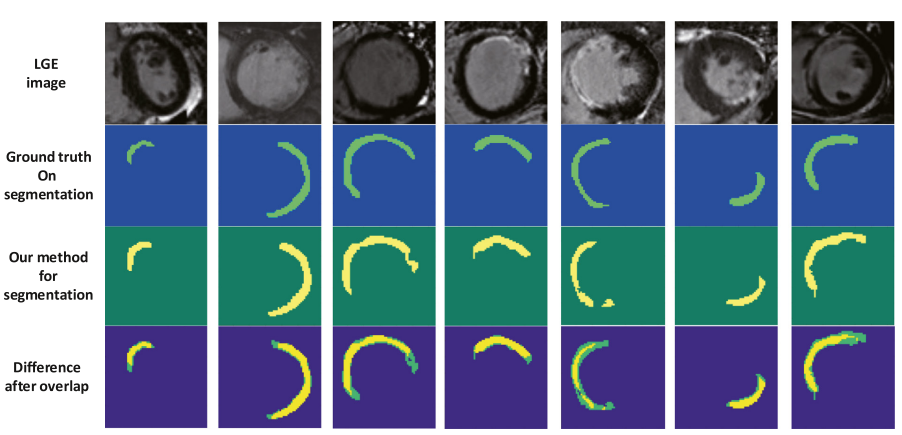
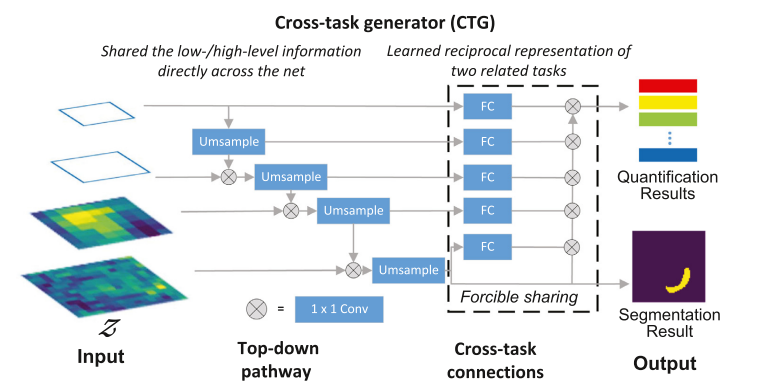
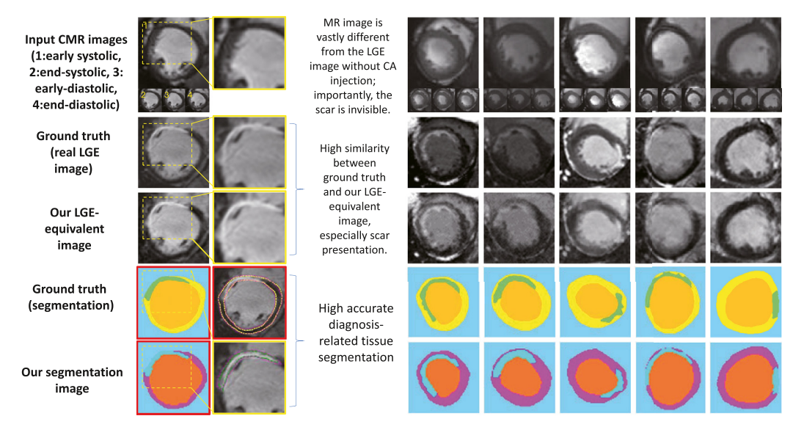
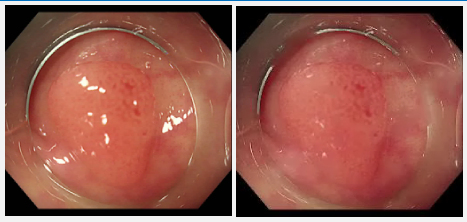
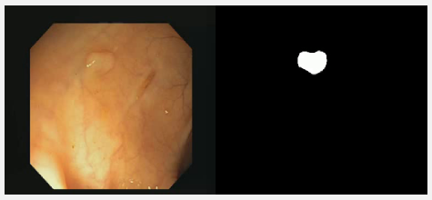
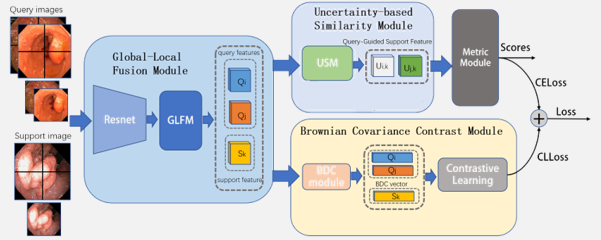
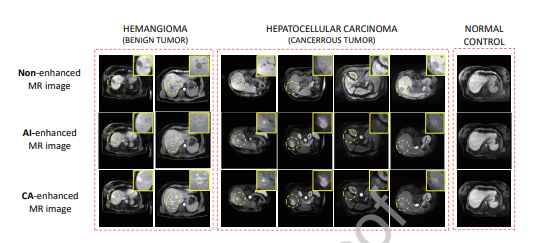
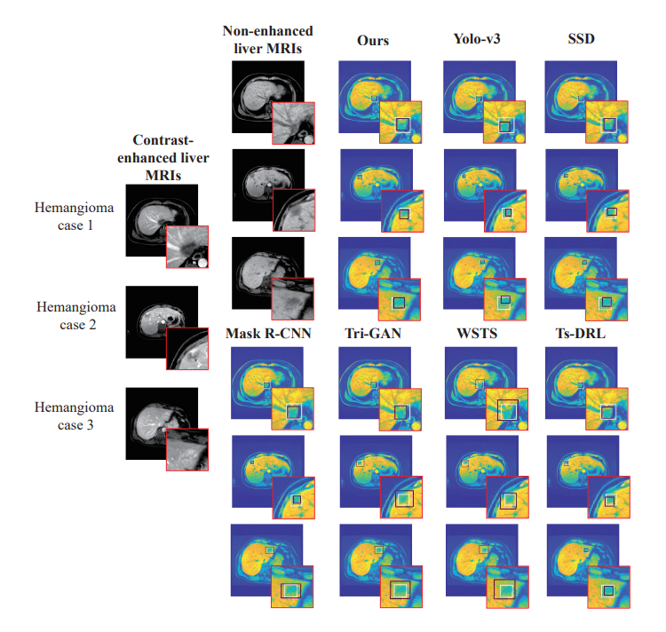

Chenchu Xu
Home
Research
Member
Publications
Teaching
Service
Contrast-free Cardiac Image Analysis



Segmentation of Infarction
Quantification of Infarction
Synthesis of Ischemic Heart Disease Images
Multimodal Endoscopy Task



Highlight Repair
Weakly Supervised Temporal Segmentation
Few-shot Classification
Contrast-free Liver Detection


Synthesis of Gadolinium-enhanced Liver Tumors
Detection of Liver Tumors